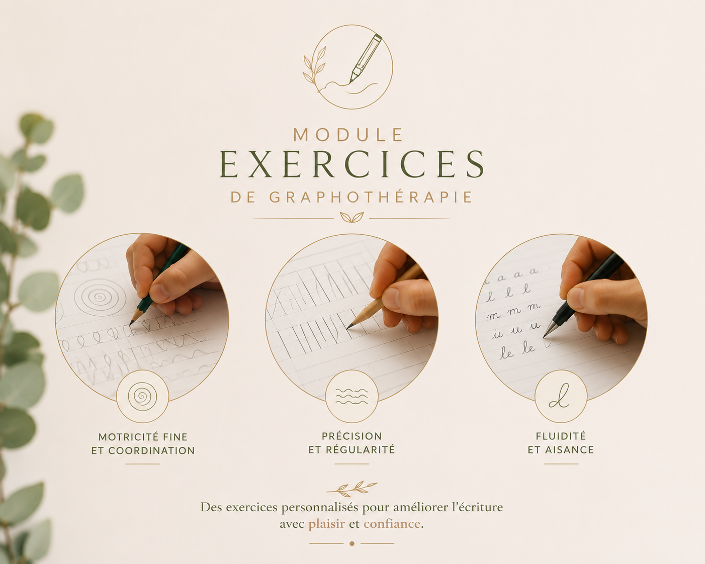
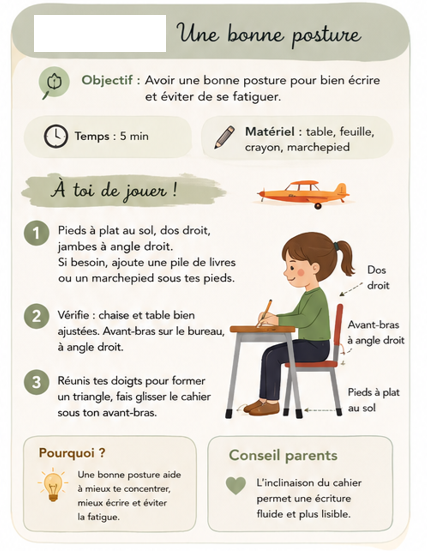
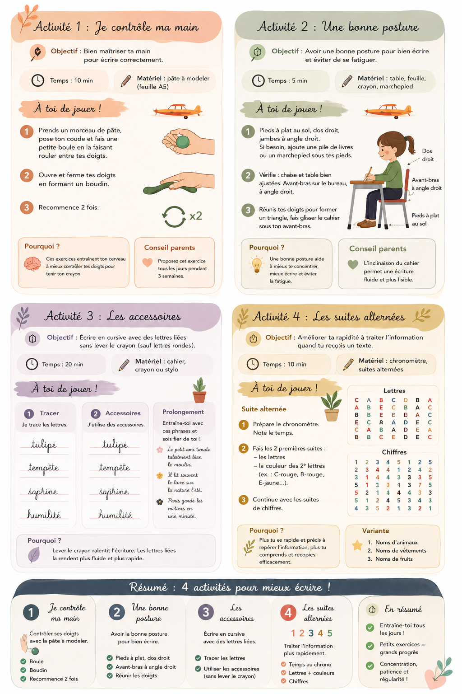

Quelques exercices pour mieux écrire
Un aperçu de ce que nous travaillons en séance. En accompagnement, les exercices sont personnalisés selon l'âge et les objectifs.


La fiche à imprimer
Une bonne posture pour bien écrire
Pieds à plat au sol, dos droit, avant-bras posé sur le bureau à angle droit, cahier légèrement incliné et glissé sous l'avant-bras. Une bonne posture aide à mieux se concentrer, à écrire plus facilement et à éviter la fatigue.
Vidéo à venir
Une courte vidéo pour montrer la bonne posture en mouvement est prévue. En attendant, la fiche ci-contre reprend tout l'essentiel.
La planche d'exercices
Quatre activités ludiques à faire à la maison pour mieux écrire. À télécharger et imprimer.

Petits exercices, grands progrès : l'important, c'est la régularité. Une question sur un exercice ? Écrivez-moi.